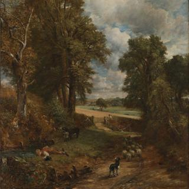
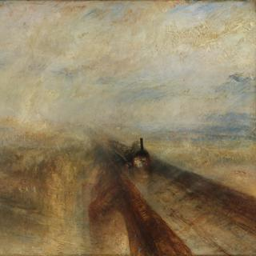

John Constable, 'Cenotaph to the Memory of Sir Joshua Reynolds', 1833-6
John Constable, 'Cenotaph to the Memory of Sir Joshua Reynolds', 1833-6
Overview
This painting depicts a memorial to the painter Sir Joshua Reynolds, built by Sir George Beaumont in the grounds of his home at Coleorton Hall, Leicestershire, in 1812. Beaumont planned to redesign his gardens to include other memorials dedicated to his friends and the people he admired. The poet William Wordsworth spent about a month at Coleorton in the summer of 1810 composing inscriptions for the memorials.
When Constable visited Coleorton in 1823, he made a pencil drawing of the monument. Ten years later, he began to turn the pencil drawing into an oil painting, which he was to entitle Cenotaph to the Memory of Sir Joshua Reynolds. He returned to the canvas three years later, and finished it in time for the Royal Academy exhibition of 1836. It was the last painting that Constable exhibited at the Royal Academy and it did not sell.
In-depth
This painting is based on a pencil drawing in the Victoria and Albert Museum, London. Dated 28 November 1823, it was made on the last day of Constable’s six-week stay at the home of Sir George Beaumont (1753–1827) and his family at Coleorton Hall in Leicestershire. Beaumont played a crucial part in the creation of the National Gallery and made the first bequest of paintings in 1825.
Beaumont was a friend and great admirer of the painter Sir Joshua Reynolds. In 1812, 20 years after Reynolds’s death, Beaumont erected a stone ‘urn’ dedicated to his memory in the grounds of Coleorton Hall. He planned to redesign the gardens to include other memorials dedicated to his friends and the people he revered. The poet William Wordsworth spent about a month at Coleorton in the summer of 1810 composing inscriptions for the memorials.
The memorial to Reynolds was to be situated at the end of an avenue of lime trees, recently planted near the Hall. As Constable shows in his painting, busts of the great artists of the Italian Renaissance, Michelangelo and Raphael, were placed near the start of the lime avenue, each mounted on a tall tapering block of stone. In reality, they were not as close to Reynolds’s memorial as Constable paints them.
Constable was staying with the Beaumonts to make copies of their landscape paintings by the seventeenth-century French painter, Claude. He spent some of his time sketching outdoors. In a letter to his friend, the Reverend John Fisher, Constable wrote: ‘In the dark recesses of these gardens, and at the end of one of the walks, I saw an urn [...] of Sir Joshua Reynolds – & under it some beautifull verses, by Wordsworth.’ He made a pencil and grey wash drawing of it in his sketchbook.
Ten years later, Constable began to turn the pencil drawing made on the spot at Coleorton into the oil painting, which he was to entitle Cenotaph to the Memory of Sir Joshua Reynolds. He appears to have worked on the painting in early 1833. Three years later, Constable returned to the canvas, aiming to finish it in time for the Royal Academy exhibition of 1836.
Constable was unsure how best to represent the inscription on the memorial; a painter and fellow member of the Royal Academy, C.R. Leslie (1794–1859), advised him to make only the words ‘REYNOLDS’ legible and just to suggest the other lines. Constable’s introduction of a stag in the picture gives a sense of the wildness of the setting, but a false sense of the memorial’s size. In reality the stag would have been taller than the monument, but in the picture it is half the size.
The picture received a mixed reception at the Royal Academy exhibition. The Morning Chronicle’s review was one of the most positive: ‘The peculiar manner in which Mr Constable’s pictures are painted makes them appear singular at first, but by choosing a proper distance for observing them, by degrees the effect seems to grow on us until we are astonished that we did not like them better before.’
This was the last painting that Constable exhibited at the Royal Academy. It did not find a buyer.
- NG number
- NG1272
- Date made
- 1833-6
- Medium
- Oil on canvas (unlined)
- Dimensions
- 132 × 108.5 cm

John Constable, 'The Cornfield', 1826
John Constable, 'The Cornfield', 1826
Overview
A boy has paused from the thirsty work of herding sheep at noon to lie flat on the bank of a pool and drink its cool water. This vision of a Suffolk lane in high summer was painted in January to March 1826 in Constable’s studio in London. The lane winding into the cornfield is based on Fen Lane, along which Constable had often walked as a boy from his own village of East Bergholt to Dedham, where he attended school. The lane still exists but the countryside shown beyond it was largely invented.
Constable exhibited the painting at the Royal Academy in 1826. Despite receiving critical praise, it failed to sell, either at the Royal Academy or at any of the four other exhibitions to which Constable sent it. A committee of friends and admirers finally bought The Cornfield and presented it to the National Gallery in 1837 as a tribute to Constable after his death.
In-depth
A boy has paused from the thirsty work of herding sheep at noon to lie flat on the bank of a pool and drink its cool water. This vision of a Suffolk lane in high summer was painted in January to March 1826 in Constable’s studio in London.
The lane winding into the cornfield was based on Fen Lane, along which Constable had often walked as a boy from his own village of East Bergholt to Dedham, where he attended school. The lane still exists but the countryside shown beyond it was largely conjured up in Constable’s studio. The church tower and cluster of red-roofed houses ‘never existed’, as the artist’s son Charles Constable was later to point out – Constable invented the village to provide a distant focal point beyond the bend of the river. His resolve to be a ‘natural painter’ did not mean that he depicted everything faithfully.
Constable completed the painting by 8 April 1826, when he dispatched it titled ‘Landscape’ to the Royal Academy for the exhibition opening to the public on 1 May. Shortage of time had forced him to work quickly. He had intended to exhibit his large Waterloo Bridge but had to lay it aside on account of ‘the ruinous state of my finances’. Although not as large as his ’six-footers‘, The Cornfield was of a sufficient size to continue Constable’s bid for attention at the Royal Academy for his monumental scenes of the Stour Valley.
A wooded lane leading to a more sunlit landscape was a recurrent feature of Constable’s compositions, and is reminiscent of the work of both the Dutch painter van Ruisdael, and Suffolk-born Gainsborough, which Constable admired. His first idea for The Cornfield is expressed in a very free oil sketch now in the Indianapolis Museum of Art. He then produced an oil study of just the landscape (now on loan to the City Museums and Art Gallery, Birmingham). The finished picture closely follows the landscape contours of the Birmingham study and echoes its light. The detail of the boy drinking was taken from an oil sketch made some 15 years earlier, probably also in Fen Lane.
Constable remarked to his friend Fisher: ’I do hope to sell this present picture – as it has certainly got a little more eye-salve than I usually give them.‘ By ’eye-salve' he probably meant picturesque details such as the drinking boy, the donkeys grazing the bank dotted with poppies and cow parsley, the flock of sheep, distant village and meandering river. The cornfield itself is painted with masterly economy: just a few vertical brushstrokes at the field’s edge suggest the tall wheat, while broader brushstrokes convey the undulating sweep of the field.
Despite receiving critical praise, the painting failed to sell, either at the Royal Academy or at any of the four other exhibitions to which Constable sent it. It was named The Cornfield by the committee of friends and admirers that finally bought it and presented it to the National Gallery in 1837 after Constable’s death. It was the first picture by Constable to enter the national collection.
- NG number
- NG130
- Date made
- 1826
- Medium
- Oil on canvas
- Dimensions
- 143 × 122 cm

John Constable, 'The Hay Wain', 1821
John Constable, 'The Hay Wain', 1821
Overview
The view is of the millpond at Flatford on the River Stour. Flatford Mill was a watermill for grinding corn, operated by the Constable family for nearly a hundred years. It still survives and is about a mile from Constable’s birthplace at East Bergholt, Suffolk. The house on the left also survives; in Constable’s time it was occupied by tenant farmer Willy Lott.
The title, The Hay Wain, refers to the wooden wagon (wain) used for transporting cut and dried meadow grass (hay). The empty wagon is making its way through the shallow water to cross to the meadow on the other side where haymakers are at work.
Although the painting evokes a Suffolk scene, it was created in the artist’s studio in London. Working from a number of open-air sketches made over several years, Constable then made a full-size preparatory oil sketch to establish the composition before painting the final picture.
In-depth
This is the third of the large landscapes set around the River Stour that Constable exhibited at the Royal Academy between 1819 and 1825. The Hay Wain was shown in 1821, the year after Stratford Mill. His determination to capture the rural Suffolk landscape of his boyhood in these monumental paintings must in part have been due to a sense that this way of life was changing due to rapid industrialisation – the factories, steam power and locomotives that appear in works by his contemporaries, such as Turner, are absent from Constable’s paintings.
The view is of the millpond at Flatford. Flatford Mill was a watermill for the grinding of corn, leased and operated by the Constable family for nearly a hundred years. It still survives and is about a mile from Constable’s birthplace at East Bergholt, Suffolk. In The Hay Wain, the mill is out of sight – we just glimpse the edge of its red brick wall on the extreme right. The building on the left of the picture is the house, which also still survives, occupied during Constable’s time by the tenant farmer Willy Lott. Although Constable’s parents moved from the mill house to a residence in East Bergholt before he was born, he would have known this view of Willy Lott’s house extremely well.
The painting’s title refers to the wooden wagon (wain) used for transporting cut and dried meadow grass (hay), which is used as animal feed over the winter. The empty wagon is making its way through the shallow millpond towards a ford across the stream – the ‘flat ford’ that gave Flatford its name. The front wheel of the wagon is already turning to the right towards the ford which will enable it to cross to the meadow on the other side. There haymakers are at work: one sharpens his scythe, others are pitchforking hay into an already laden wagon in the distance. It is just possible to make out one man stacking the load from the top.
Although the painting evokes a Suffolk scene, it was created in the artist’s studio in London. Over the years, Constable had made many drawings and oil sketches of Willy Lott’s farmhouse; its red roofs and chimneys, whitewashed walls and brick buttresses appear in several of Constable’s Stour scenes. His earliest oil study of it was probably painted in 1802. When painting The Hay Wain, Constable referred back particularly to three small oil sketches of the house he had made in 1811. The woman stooping over the water from the step outside Lott’s house with a pitcher beside her was retained in the same pose and position in the final picture. Constable made a small preliminary oil sketch showing the hay wagon itself in about 1820 (Yale Center for British Art, New Haven). This was followed by a full-scale oil sketch to develop the composition (Victoria and Albert Museum, London), which Constable painted quickly with large areas of the brown ground of the canvas left bare. The horse and rider in the foreground of the oil sketch were kept in the final picture but painted out at a late stage.
The small empty boat on the right is based on a study Constable made in 1809 – already used in The White Horse (National Gallery of Art, Washington) in 1819 and later used again in Salisbury Cathedral from the Meadows (Scottish National Gallery, Edinburgh) of 1831. It demonstrates Constable’s economy with his source materials, his instinct for local detail and his ability to balance a composition – for small though it is, the boat balances the house on the left and the hay wagon in the centre. The thick red fringes decorating the horses‘ leather collars add a bright note of colour.
Scenes showing a cart going through a ford recur in seventeenth-century Flemish and Dutch landscape paintings. Constable admired these works for their depiction of the natural rather than classicising landscape that were fashionable in his day. The 1838 sale of Constable’s pictures that took place after his death included two landscapes by Jan van Goyen, one with travellers in a cart, one with wagons descending a hill. Constable was probably encouraged that Flemish painters had made such unheroic events the subjects of their pictures. He had also studied Rubens’s An Autumn Landscape with a View of Het Steen and admired it greatly. The oddly Flemish appearance of the wagon and the breadth of the composition in The Haywain may owe something to Rubens’s influence. The wagon does not conform to the usual design of hay wagons or carts of Constable’s period – its sides are too low for carting hay and it appears more suited to carrying timber. It is also very close to Rubens’s chalk study of a hay cart for Return from the Harvest (Staatliche Museen, Berlin). However, Constable did not generally copy the work of other artists directly, preferring to pursue a way of painting ’founded on original observation of nature‘.
Constable himself did not call this picture The Hay Wain – it was a nickname given to it by his friend Archdeacon Fisher. When it was sent to the Royal Academy in 1821 with its given title ’Landscape: Noon‘, it was greeted favourably by reviewers. The Examiner declared that it ’approaches nearer to the actual look of rural nature than any modern landscape whatever‘. However, it did not sell. Constable was probably unaware at the time that two French visitors to England – the artist Géricault and the writer Nodier – had seen his painting in the Royal Academy. According to Delacroix, Géricault returned to France ’quite stunned‘ by Constable’s picture. Nodier suggested that French artists should similarly look to nature rather than relying on journeys to Rome for inspiration (by this he meant emulating the classicising landscapes, painted by artists such as Claude).
In 1824 Constable agreed to sell The Hay Wain, View on the Stour near Dedham and a small Yarmouth Jetty to the Anglo-French dealer Arrowsmith for £250. Arrowsmith sent them to the 1824 Paris Salon, where they caused a sensation. Constable commented: ’Think of the peaceful farm houses of Suffolk, forming a scene of exhibitions to amuse the gay and frivolous Parisians.' He was awarded a gold medal by the French king, Charles X, for his exhibits at the Salon, but chiefly for The Hay Wain. The medal is now in the National Gallery Archives.
- NG number
- NG1207
- Date made
- 1821
- Medium
- Oil on canvas
- Dimensions
- 130.2 × 185.4 cm

Jean-Baptiste-Camille Corot, 'The Four Times of Day: Evening', about 1858
Jean-Baptiste-Camille Corot, 'The Four Times of Day: Evening', about 1858
Overview
This is the third in a series of four panels illustrating the different times of day that Corot painted for his friend, fellow artist Alexandre-Gabriel Decamps. It is evening and colours are at their richest. Nearest to us, a mysterious figure is wearing what appears to be a dark brown monk’s habit with a hood, possibly Capuchin robes. Two women are in a boat on the shoreline. One, in a white and pink dress, is sitting, while the other, in a white dress and yellow shawl, stands as she holds an instrument that may be a mandolin.
The women’s clothing, landscape setting and the presence of music suggest a fête galante, a type of picture showing elegantly attired men and women in a parkland setting which was particularly popular at the court of Versailles in the eighteenth century. The lakeside location ringed by tall sinuous trees with billowing feathery foliage also has echoes of French Rococo painting.
In-depth
This is the third in the series The Four Times of Day that Corot painted for his friend, fellow artist Alexandre-Gabriel Decamps. It is evening and colours are at their richest. The upper half of the sky has now turned a deeper blue that is almost turquoise. This is the most highly worked of the four panels and there is greater definition throughout – for example, of the foliage, especially in the foreground, as the shadows begin to deepen. This is also the only picture in the series to include water (a lake), a feature in many of Corot’s paintings.
As in Noon, we can see three people. Nearest to us, a mysterious figure with an indistinct face walks away from the lake. He holds a large staff and wears what appears to be a dark brown monk’s habit with a hood, possibly Capuchin robes. Corot first painted a monk during his first trip to Italy in 1825–8, and monks appear in a number of his paintings. On the lake itself, two women are in a boat on the shoreline. One, wearing a white and pink dress, is sitting while the other, in a white dress and yellow shawl, stands as she holds an instrument that may be a mandolin. Her red bonnet echoes the streak of red on the monk’s hood.
The seventeenth-century artist Claude often conceived of his paintings as pairs and frequently juxtaposed morning and evening – setting a precedent for Corot’s work. Morning scenes were frequently associated with beginnings – for example, of voyages or journeys. Evening scenes were, not surprisingly, associated with activities that occurred at the end of the day, such as people making music, as the two women do here. Their clothing, the landscape setting and the suggestion of music give the picture the feeling of a fête galante, a subject that emerged in Italian art in the sixteenth century and which was particularly popular at the French court at Versailles in the eighteenth century. The lakeside location, ringed by tall sinuous trees, whose billowing feathery foliage is set against the sky, also has distinct echoes of French Rococo painting. Artists such as Watteau, Pater, Lancret and Fragonard frequently painted such scenes – for example, Watteau’s The Scale of Love.
Corot loved music and he often attended concerts, as well as the opera and ballet. He frequently sketched performances and his mature works, although based upon the observation of nature, often recall stage scenery. Music is a theme throughout his work, and a number of his paintings include musical instruments, particularly string instruments such as mandolins and cellos. Although not a musician himself, Corot often used musical metaphors when discussing his work – for example, likening his own abilities to that of a flute which could only play a handful of notes. As his biographer, Ėtienne Moreau-Nélaton, commented, ‘He analysed a symphony as he would a picture. He praised an art which was able to produce the most varied effects from the same motifs.’
- NG number
- NG6653
- Date made
- About 1858
- Medium
- Oil on wood (probably cherry)
- Dimensions
- 142.2 × 72.3 cm

Jean-Baptiste-Camille Corot, 'The Four Times of Day: Morning', about 1858
Jean-Baptiste-Camille Corot, 'The Four Times of Day: Morning', about 1858
Overview
This is the first in a series of four panels illustrating the different times of day that Corot painted for his friend, fellow artist Alexandre-Gabriel Decamps. Two tall trees with full foliage on the left of the panel are offset by two smaller trees on the right. Corot’s use of trees on either side of the picture to create a vista framing the view beyond is a compositional device used by classical landscape painters, such as Claude.
Starting from a thin and sketchily applied brown underpaint, Corot built up the composition with thicker, more opaque paint, but much of the picture remains an almost monochrome brownish-green. The most intense colour is the band of cadmium yellow-orange on the horizon, which indicates the imminent emergence of the sun as dawn breaks. Corot shows that as the light increases so colour intensifies, and this idea unfolds further across the next two panels. The bonnet introduces a red highlight that recurs across the series.
In-depth
This is the first in a series The Four Times of Day that Corot painted for his friend, fellow artist Alexandre-Gabriel Decamps. Two tall trees with full foliage on the left of the panel are offset by two on the right, which are much smaller and more fragile. Perhaps just saplings, their foliage is sparse.
Corot used a similar arrangement in Noon, but reversed the composition with a group of trees in full foliage on the right and a single, almost bare tree on the left. A compositional device used by classical landscape painters such as Claude, the trees either side create a vista framing the view beyond. Also on the left, immediately behind the trees, is a large rocky outcrop with yet more trees beyond it. On the right, a solitary person holding a stick (made by Corot scratching directly into the wet paint) and wearing a red bonnet or hat is gathering wood. The gesture of the arm reaching up to the tree trunk is one that Corot used for female figures in other paintings. The presence of two goats (only just visible to the left of the figure) suggests that she, or he, may be a goatherd.
Starting from a thin and sketchily applied brown underpaint, which can be seen throughout the picture, Corot built up the composition with thicker, more opaque paint, particularly for the rocks and denser foliage. Yet much of the picture remains an almost monochrome brownish-green. The most intense colour is the band of cadmium yellow-orange on the horizon. Mixed with a just hint of pale rose pink, it indicates the imminent emergence of the sun as dawn breaks. Thickly painted with impasto, these streaks of yellow are almost the only area of bright colour in the panel, except for a few small patches of vivid colour, such as the red bonnet.
The suggestion here is that colour is a function of light, initiating a development that unfolds across the next two panels. In effect, The Four Times of Day presents a narrative of the world revealing itself as the day advances. As the light increases, so colour intensifies, achieving its richest tonalities in Evening, before we return to near monochrome in Night.
- NG number
- NG6651
- Date made
- About 1858
- Medium
- Oil on wood (probably cherry)
- Dimensions
- 142.2 × 72.3 cm

Jean-Baptiste-Camille Corot, 'The Four Times of Day: Night', about 1858
Jean-Baptiste-Camille Corot, 'The Four Times of Day: Night', about 1858
Overview
A rare example of a night scene by Corot, this is the last in a series of four panels illustrating the different times of day that he painted for his friend, fellow artist Alexandre-Gabriel Decamps. As in Morning, we see a single figure, probably a man, accompanied by a dog. There is a sense of a journey home at the end of the day.
As the day draws to a close, colour drains from the landscape and we return to the near-monochrome tones of Morning. The houses that cling to the hill and the square tower hint at an Italian landscape – a suggestion which extends the possible reference to Italy introduced by the figure of the monk in Evening.
Corot’s visits to Italy had a profound effect upon his art. It was in Rome that he began painting series of views of the same scene or building at various times of the day to show different lighting conditions.
In-depth
This is the last in the series The Four Times of Day that Corot painted for his friend, fellow artist Alexandre-Gabriel Decamps. It is a rare example of a night scene by him, as he only painted a handful of nocturnal views. As in Morning, we see a single figure, probably a man, accompanied by a dog. He wears a red cap – a motif that appears throughout the sequence – and uses a staff. There is a sense of the journey home at the end of the day.
As the day ends, colour drains from the landscape and we return to the near-monochrome tones of Morning, but now in a darker key. The sky has turned dark blue, becoming grey near the top of the picture, and is dotted with white stars. A very bright star (or tiny moon) shines above the highest house on the hilltop. The houses that cling to the hill and the square tower hint at an Italian landscape – a suggestion which extends the possible reference to Italy introduced by the figure of the monk in Evening.
Corot’s visits to Italy had a profound effect upon his art. It was in Rome, in the spring of 1826, that he began painting series of views of the same scene or building at various times of the day to show different lighting conditions. In accordance with the advice of Pierre-Henri de Valenciennes, these were typically groups of three sketches painted in the morning, at noon and in the early evening. Beginning in 1827, Corot also painted pictures in pairs, to be hung together, which contrasted morning and evening light. Such landscapes often included people carrying out daily tasks that were appropriate for the specific moment.
In The Four Times of Day this practice of painting series meshes with an aspect of Corot’s art that first appeared in the 1850s – namely, his painting of souvenirs (‘memories’). These souvenirs were less ‘views’ of specific locations but were instead poetic reminiscences of a place in which feeling or mood, rather than topographical accuracy, were Corot’s primary concern. Reviewing Corot’s work in the Salon of 1861, the critic Théodore de Banville wrote of him, ‘This is not a landscape painter, this is the very poet of landscape … who breathes the sadness and joys of nature … The bond, that great bond that makes us brothers of brooks and trees, he sees it; his figures, as poetic as his forests, are not strangers in the woodland that surrounds them.’ Although The Four Times of Day does not achieve the full poetic reverie of Souvenirs painted in the 1860s and 1870s, Banville’s comments – particularly his observation on how Corot’s figures are at home in the landscape – could be taken to apply to this series.
In part a ‘memory’ of his time in Italy and an evocation of the forests at Fontainebleau, The Four Times of Day is also a synthesis of the influences that shaped Corot’s art – the classical landscapes of Claude, the fêtes galantes of eighteenth-century French painting and the practice of sketching in oils outdoors.
- NG number
- NG6654
- Date made
- About 1858
- Medium
- Oil on wood (probably cherry)
- Dimensions
- 142.2 × 64.7 cm

Jean-Baptiste-Camille Corot, 'The Four Times of Day: Noon', about 1858
Jean-Baptiste-Camille Corot, 'The Four Times of Day: Noon', about 1858
Overview
This is the second in the series The Four Times of Day that Corot painted for his friend, fellow artist Alexandre-Gabriel Decamps. In this panel, the light is brighter than in the previous panel, Morning, and fills the picture. There is an overall lightening of tone and a wider range of colours. The application of the paint is still sketchy, and you can see traces of the paintbrush’s bristle in several places.
Nearest to us, a young man in a white shirt and red hat rests his left foot upon a rock as he adjusts his shoe. Unlike the figure in Morning, we can see his face (in profile) and there is greater detail to his clothing. Lit from above, he barely casts a shadow, as the sun is high in the sky. Further back, a man with a walking stick and a woman wearing a white hat are walking along the path, although their direction of travel is unclear.
In-depth
This is the second in the series The Four Times of Day that Corot painted for his friend, fellow artist Alexandre-Gabriel Decamps. The light source in Morning is from the back and to the right of the picture. In Noon the light has increased and is more evenly distributed, as maximum visual clarity is achieved. In his book Éléments de perspective pratique, Pierre-Henri de Valenciennes had particularly urged painters to seize the intense bright light of noon when ‘Nature [is] prey to the devouring fires of high summer [and] the shadows cast are barely longer than the bodies that produce them.'
There is also general lightening of tone that can be seen most clearly in the tree trunks, pale blue sky and distant hills. As he often did, Corot has added white paint to achieve this – a technique adopted by Pissarro. There is also a greater differentiation of colours – for example, the dark brownish-green foliage in Morning has been replaced by foliage consisting of green and pale grey. The application of the paint is still sketchy, and you can see traces of the paintbrush’s bristle in several places.
Nearest to us, a young man in a white shirt and red hat rests his left foot upon a rock as he adjusts his shoe. Unlike the figure in Morning, we can see his face (in profile) and there is greater detail to his clothing. Lit from above, he barely casts a shadow – in keeping with Valenciennes’ observation. Further back, a man with a walking stick and a woman wearing a white hat walk along the path, although their direction of travel is unclear. As the woman (on the left) appears to be moving away from us, while the man seems to be coming towards us, they are perhaps passing each other rather than walking together.
- NG number
- NG6652
- Date made
- About 1858
- Medium
- Oil on wood (probably cherry)
- Dimensions
- 142.2 × 62.2 cm

Joseph Mallord William Turner, 'Rain, Steam, and Speed - The Great Western Railway', 1844
Joseph Mallord William Turner, 'Rain, Steam, and Speed - The Great Western Railway', 1844
Overview
A steam engine comes towards us as it crosses the Maidenhead Railway Bridge in the rain. Designed by Isambard Kingdom Brunel, the bridge was completed in 1838. We are looking east towards London as the train heads to the west. The exaggeratedly abrupt foreshortening of the viaduct, which our eye follows to the horizon, suggests the speed with which the train bursts into view through the rain. Turner lightly brushed in a hare roughly midway along the rail track to represent the speed of the natural world in contrast to the mechanised speed of the engine. The animal is now invisible as the paint has become transparent with age, but it can be seen in an 1859 engraving of the painting.
Turner frequently painted scenes of contemporary life and was particularly interested in industry and technology. As he often used new forms of transport, including steam trains, it is unlikely that the painting is a rejection of modernity. Instead, he saw both the train and the bridge as subjects worthy of being painted.
In-depth
A steam engine rushes towards us as it speeds along a bridge through the rain. The bridge is the Maidenhead Viaduct, which crosses the Thames between Taplow and Maidenhead on the newly laid Great Western line to Bristol and Exeter. Designed by Isambard Kingdom Brunel, the viaduct was completed In 1838 and in use from July 1839. We are looking east towards London as the train heads towards the west of England. The arched bridge on the left is Taylor’s road bridge, built in the 1770s. The engine, of the ‘Firefly’ class, pulls a train of unroofed open-goods wagons in which passengers, paying the cheapest rates, could travel. Average engine speed on the Great Western Railway (GWR) in 1844 was 33 mph, but on long level stretches, such as the Maidenhead Viaduct, an unprecedented 60 mph could be reached – faster than any galloping horse.
The 1840s was a period of ‘railway mania’, and by 1844 the GWR had already constructed over 100 miles of line, which Turner could have travelled on during the previous six or seven years. We cannot be certain if this picture was inspired by a recent journey, or if he had travelled on this stretch of track. However, in an account told to the critic John Ruskin, Jane O’Meara (later Mrs John Smith) related how, as a young woman aged eighteen, she had been travelling to London on that line during a stormy night in June 1843. A fellow passenger – ‘with the most wonderful eyes’ – had leaned out of the train window for almost ten minutes when the train had come to a halt at Bristol during the storm. On seeing Rain, Steam and Speed at the Royal Academy, she claimed the passenger must have been Turner.
Even if Turner had not travelled on this line, he would have known contemporary engravings of trains moving diagonally and at speed through the landscape. These engravings may have given him the idea for a railway painting based upon the principles of perspective he had taught himself through his study of Poussin and Claude, and which he had included in his lectures as Professor of Perspective at the Royal Academy. Turner had previously used this type of diagonal recession with great effect – for example, in the dramatically foreshortened perspective of Westminster Bridge in The Burning of the Houses of Lords and Commons (1835, Philadelphia Museum of Art). Here he uses the exaggeratedly abrupt foreshortening of the viaduct, which our eye follows to the horizon, to suggest the speed with which the train bursts into view through the rain. Turner further accentuates this effect by reducing the double rail track across the bridge to a single narrow line.
The art historian John Gage observed: ‘the title of the picture makes clear that Turner was painting not a view of the Great Western Railway, but an allegory of the forces of nature.’ These forces of nature include the rain, which falls steadily but not so heavily as to entirely obscure the view or the gleams of sunlight that fall on the woods and fields either side of the bridge. Steam is represented by the three small puffs emerging from the engine’s funnel – in 1844 engines did not produce the great clouds of steam often associated with steam locomotives. Speed is most obviously embodied by the train itself, but Turner included another detail – a hare, running along the track ahead of it. A late addition, the hare was lightly brushed on top of the existing paint, roughly midway along the rail track, and is now invisible because the paint has become transparent with age. It can be seen in an 1859 engraving of the painting by Robert Brandard, who specifically sought to clarify details in the painting. According to the artist George Leslie, who as a boy had watched Turner putting the final touches to the painting the day before it went on public exhibition in 1844, the hare, not the train, was meant to represent speed. Turner further emphasises the theme of speed by including two small details. On the river on the left, you can see a small boat and, barely visible near the right edge of the picture, a man drives a horse-drawn plough. Both the boat and the plough are examples of relatively slow, non-mechanised activity. As in The Fighting Temeraire, Turner contrasts the pre-industrial with the modern.
- NG number
- NG538
- Date made
- 1844
- Medium
- Oil on canvas
- Dimensions
- 91 × 121.8 cm

Joseph Mallord William Turner, 'The Fighting Temeraire', 1839
Joseph Mallord William Turner, 'The Fighting Temeraire', 1839
Overview
Turner’s painting shows the final journey of the Temeraire, as the ship is towed from Sheerness in Kent along the river Thames to Rotherhithe in south-east London, where it was to be scrapped. The veteran warship had played a distinguished role in the Battle of Trafalgar in 1805, but by 1838 was over 40 years old and had been sold off by the Admiralty. When exhibited at the Royal Academy in 1839, the painting was accompanied by lines Turner had adapted from Thomas Campbell’s poem, Ye Mariners of England: ‘The flag which braved the battle and the breeze, / No longer owns her.’
It is unlikely that Turner witnessed the ship being towed; instead, he imaginatively recreated the scene using contemporary reports. Set against a blazing sunset, the last voyage of the Temeraire takes on a greater symbolic meaning, as the age of sail gives way to the age of steam.
In-depth
Turner’s painting shows the final journey of the Temeraire, as the ship is towed by a paddle-wheel steam tug from Sheerness in Kent along the river Thames to Rotherhithe in south-east London, where it was to be scrapped.
Built of the wood from over 5000 oaks, the 98-gun, three-decker veteran warship had played a distinguished role during the Napoleonic Wars, defending Nelson’s flagship Victory at the Battle of Trafalgar in 1805. With the advent of peace in 1815, most of Britain’s great warships became redundant, and from 1820 the Temeraire had been moored off Sheerness, serving mainly as a supply ship. In June 1838 the Admiralty ordered that the decaying Temeraire be sold, as the ship was by then over 40 years old and worth only the value of the timbers. Prior to sale, Temeraire was stripped by the Navy of all re-usable parts – including masts and yards – and reduced to an empty hull. The ship was sold for £5530 to John Beatson, a Rotherhithe shipbreaker and timber merchant. As the mastless 2110-ton Temeraire was unable to sail independently, Beatson hired two steam tugs to tow it along the Thames from Sheerness to his breaker’s wharf at Rotherhithe. Moving the Temeraire took about two days, and the ship finally berthed at Beatson’s wharf on 6 September.
It is unlikely that Turner witnessed the Temeraire being towed – he may not even have been in England at the time – although he could have previously seen the ship when travelling past Sheerness. Instead, he imaginatively recreated the scene using contemporary reports. News of the ship’s fate would have aroused his patriotism. Not only was the Temeraire the largest ship ever to have been sold by the Admiralty for breaking up and the largest to have been brought so high up the Thames, but Turner certainly knew of its action at the Battle of Trafalgar. He had already included a glimpse of the ship in a large painting of 1806, The Battle of Trafalgar, as seen from the Mizen Starboard Shrouds of the Victory (Tate, London), and in adopting its nickname, the ‘Fighting’ Temeraire, he explicitly acknowledged its action at the battle which, over 30 years later, continued to be commemorated in literature and art.
Turner’s painting is as much a memorial to the heroic history of the Temeraire as it is a record of the ship’s final journey. He took liberties with the facts, in part to allow the ship to retain its dignity and to draw out symbolic aspects of the image. To this end, he has shown the ship’s three lower masts intact, their sails furled and still partly rigged. He has also replaced the original black and yellow paintwork with white and gold, giving the ship a ghostly presence as it glides across the glassy surface of the Thames. As it moves up river, Temeraire passes a small river craft, its sail hanging listlessly, with a square-rigger in full sail just beyond.
Turner has kept the detail of the Temeraire to a minimum but, tellingly, indicates that the ship no longer flies the Union flag, having ceased to be naval property. The flag’s absence was noted in the lines of poetry that accompanied the picture when exhibited at the Royal Academy, which Turner had adapted from Thomas Campbell’s poem, Ye Mariners of England: ‘The flag which braved the battle and the breeze, / No longer own her.’ The inclusion of the tug’s white commercial flag, flying prominently from its tall mast, adds to the pathos of the Temeraire’s missing flag.
Although the Temeraire was towed by two tugs, Turner has depicted only one pulling the ship (a second tug is just visible in the distance). He has also deliberately altered the construction of the tug, placing its black funnel in front of its mast rather than behind it, allowing a long plume of sooty smoke to blow backwards through the Temeraire’s masts. This revision heightens the drama of the scene and adds the possible symbolic dimension of steam power over taking sail power. Literal-minded viewers were quick to point out Turner’s apparent ‘mistake’, but he was furious when the tug’s design was ‘corrected’ in a later engraving of the painting. Some critics, such as the novelist William Makepeace Thackeray, viewed the painting as critical of the tug and what it represented, but Turner’s attitude to industrial modernity was more ambiguous. Although he may have mourned the passing of a great warship from the age of sail, he also acknowledged – and often painted – the realities of modern life and regularly travelled on new modes of transport, including steamships and the railways.
The sunset that fills the right-hand third of the painting is fundamental to the picture’s elegiac tone, as it reinforces the narrative of the Temeraire approaching its final berth. As the critic John Ruskin observed, Turner’s ‘most deeply crimsoned sunset skies’ often signified death. The blazing copper hues of the clouds echo the tug’s fiery smoke and the white disk of the sun itself is counterbalanced by the dark buoy in the lower right corner, which also creates scale and leads us into the scene. As the sun sets, a pale crescent moon rises in the top left corner. Turner had long been interested in the simultaneous appearance of the sun and the moon, but here their presence perhaps also accentuates notions of transition. Below the sun, a forest of pale masts – described by Thackeray as ‘a countless navy that fades away’ – recedes into the distance. The sunset is, however, another instance of Turner’s poetic licence. Not only is it likely that the Temeraire reached Rotherhithe in the afternoon, but Turner’s sun is also setting in the wrong direction. A ship coming up the Thames would be heading west and could not have had the sunset behind it in the east. Turner’s positioning of the sun provoked a lively debate in The Times.
When the picture was first exhibited in 1839 at the Royal Academy, reviewers singled it out for praise, with many noting its poetic and patriotic resonances. Despite offers to buy it, Turner kept the painting till he died in 1851. It seems to have held a special place in his affections – he referred to it as ‘his Darling’ – and he may have decided early on to gift the painting to the nation. It was among the first works in the Turner Bequest to be put on display and remains one of the National Gallery’s – and Britain’s – most popular paintings.
- NG number
- NG524
- Date made
- 1839
- Medium
- Oil on canvas
- Dimensions
- 90.7 × 121.6 cm

Joseph Mallord William Turner, 'Ulysses deriding Polyphemus - Homer's Odyssey', 1829
Joseph Mallord William Turner, 'Ulysses deriding Polyphemus - Homer's Odyssey', 1829
Overview
The subject of this painting is taken from Book IX of Homer’s Odyssey. It shows Ulysses sailing from the island where Polyphemus, a one-eyed giant, had held him and his men captive. Wearing a helmet and a scarlet cloak, Ulysses raises his arms in victory as he stands on the deck of his ship, below a red banner, looking back at the island. He lifts the flaming torch with which he blinded Polyphemus, whose huge shadowy body lies sprawled across the clifftop that towers above. Luminous sea nymphs and flying fish gather at the ship’s prow as a blazing sun rises through the morning mists.
The painting signals the increasing role of colour and light in Turner’s historical landscapes. It also marks the increasingly expressive direction his painting was to follow and anticipates the visionary qualities of his late work. Writing in 1856, the English art critic John Ruskin declared it to be ‘the central picture of Turner’s career'.
In-depth
The subject of this painting is taken from Book IX of Homer’s epic poem, the Odyssey. Turner shows Ulysses sailing away from the island where Polyphemus – a man-eating cyclops (one-eyed giant) – had held him and his men captive.
Ulysses escaped by blinding Polyphemus as he slept. Wearing a helmet and a scarlet cloak, Ulysses stands beneath a red banner on his ship the morning after his escape, shouting his name to taunt the giant. As he looks back at the island, he raises his arms in victory and lifts the flaming torch with which he blinded the giant, whose enormous shadowy form lies sprawled across the clifftop that towers above. His left knee raised above the skyline, Polyphemus supports his head with a hand outlined in dark red as he prepares to hurl a boulder down upon the ship.
As Ulysses and his men make their escape, dawn arrives, represented by the brilliant disk of the sun pulled upwards by the horses of the sun god Apollo. Hard to see today, these horses were modelled in part upon those on the Parthenon frieze, which were on display at the British Museum from 1817. Although not mentioned in the poem, Turner includes a group of nereids – sea nymphs with stars on their foreheads – who, accompanied by flying fish, gather before the ship’s prow.
Ulysses deriding Polyphemus - Homer’s Odyssey was based on oil sketches Turner had made in Italy between August 1828 and February 1829. In Rome – where he may have seen Annibale Carraci’s Polyphemus frescoes in the Palazzo Farnese – he had exhibited several bold works, including Regulus (Tate, London) which included a dazzling yellow sun. The delay in shipping these canvases back to London from Rome forced Turner to produce new paintings, including this one, for the Royal Academy exhibition of 1829. The painting was a response to the sunrises of Claude, such as Seaport with the Embarkation of Saint Ursula, which Turner greatly admired.
The rich variety of colours – which range from deep cobalt blues and fiery reds to delicate pinks, greens and yellows – signals the increasing role of colour and light over what Turner described as ‘historic tone’ in his historical landscapes. This shift of emphasis was encouraged by his awareness of recent investigations into optics, including Goethe’s Theory of Colours (1810), which he probably discussed with his friend and fellow artist Charles Eastlake, who later translated Goethe’s book.
The painting had a mixed reception, with one hostile review referring to its ‘colouring gone mad … with all the vehement contrasts of a kaleidoscope or Persian carpet‘. However, writing soon after Turner’s death, the English art critic John Ruskin declared it to be ‘the central picture of Turner’s career’. This work marks the increasingly expressive direction Turner’s painting was to follow and anticipates the visionary qualities of his late work.
- NG number
- NG508
- Date made
- 1829
- Medium
- Oil on canvas
- Dimensions
- 132.5 × 203 cm